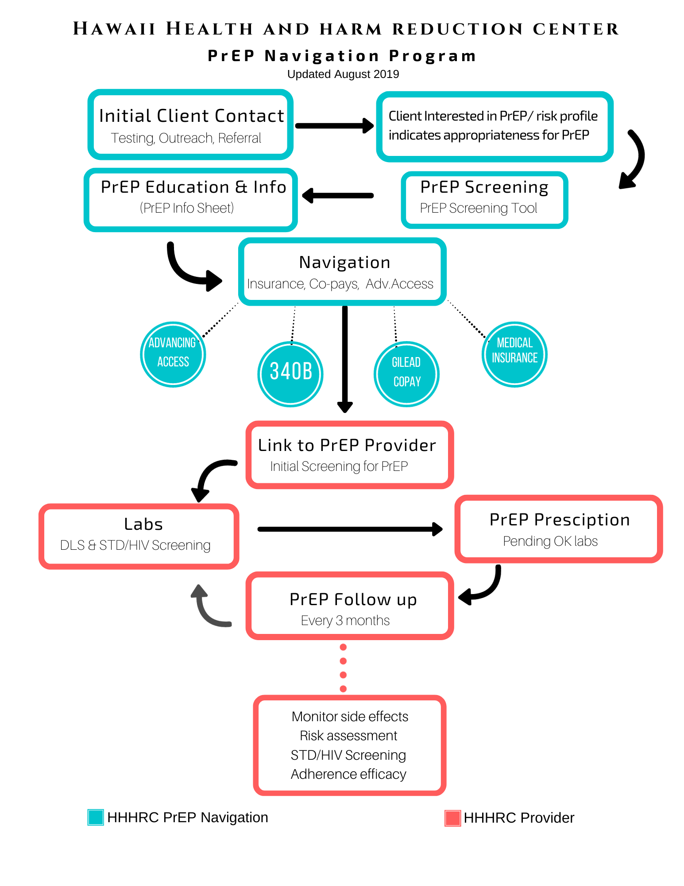
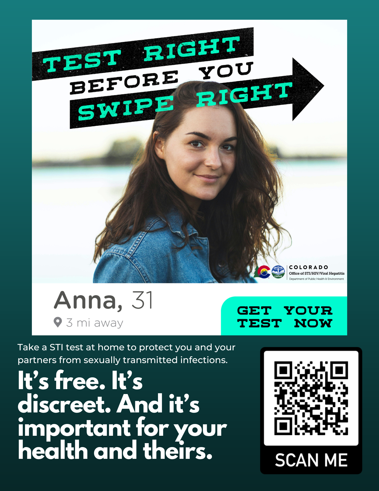
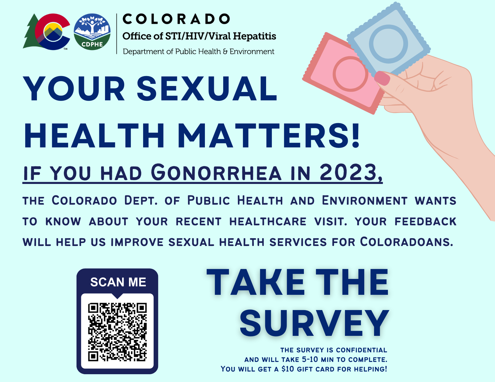
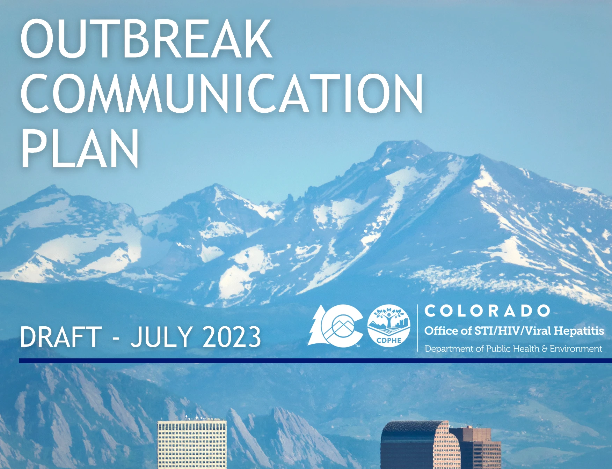

Programs, campaigns, dashboards, and this website itself. Each project blends public health substance with design and technology, built alongside the teams and communities that shaped them.
This website was designed and developed entirely by me using modern web technologies: hand-written HTML and CSS, a custom design system, vanilla JavaScript, and GitHub Pages for deployment. Building it gave me an opportunity to combine storytelling, design, and engineering into a single project while showcasing the work and communities that have shaped my career.
For the Hawaii Department of Health, I manage a data project spanning 8,000+ survey respondents and 80 outcome measures, coordinating epidemiologists and technical staff and improving data accuracy by 25% through statistical testing and QA protocols. Findings are communicated to leadership through Tableau.
A flexdashboard built in R with Plotly for my data science coursework: heatmaps, ranked bar charts, and time-series visualizations of a 1.3M-row grocery dataset. Click to explore the live dashboard.
R · Plotly · Live DemoFrom PrEP eligibility analyses at the Thai Red Cross AIDS Research Centre, featured at AIDS 2016 in Durban, to program evaluation coursework at Columbia, I've spent a decade turning data into decisions.

In 2017, I led the launch of Honolulu's first PrEP navigation program at the Hawai’i Health & Harm Reduction Center, working closely with the Hawai’i Department of Health, the state's only public STI clinic, and a team of clinicians and outreach staff. Together, we built a navigation pathway that made biomedical HIV prevention accessible to the people who needed it most, spanning outreach, screening, insurance and co-pay assistance, prescribing, and quarterly follow-up.
The program exceeded its enrollment targets by 300% in its first year.


With the Office of STI, HIV & Viral Hepatitis team at the Colorado Department of Public Health & Environment, I co-designed “Test Right Before You Swipe Right,” a bilingual campaign promoting free, discreet at-home STI testing to dating-app users, along with a statewide patient-feedback survey campaign to improve service delivery.
The campaign generated over 100,000 social media impressions.

During the 2022 MPOX outbreak, I worked alongside the Office's clinical and epidemiology teams to build first-responder training curricula for contact tracing and case investigation, and co-developed the CDPHE Office of STI/HIV/Viral Hepatitis Outbreak Communication Plan, a framework governing how the office detects, confirms, responds to, and reports out on outbreaks and clusters.
Communicating health information accurately, empathetically, and without stigma is central to how I practice public health.
My graduate training at Columbia Mailman spans biostatistics, health communication, program evaluation, leadership, and health equity.
Explore My Coursework